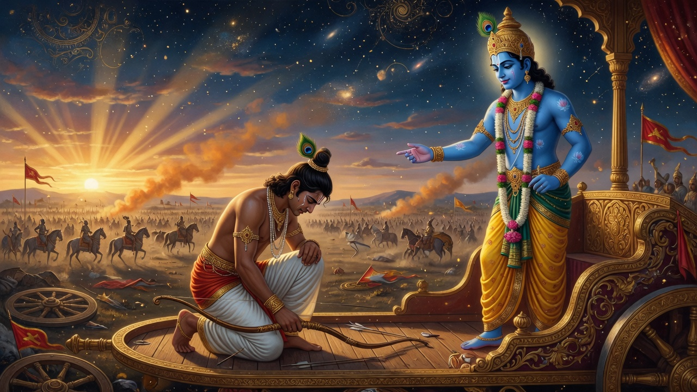
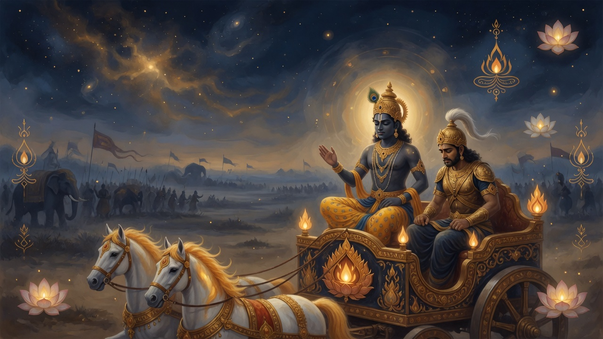
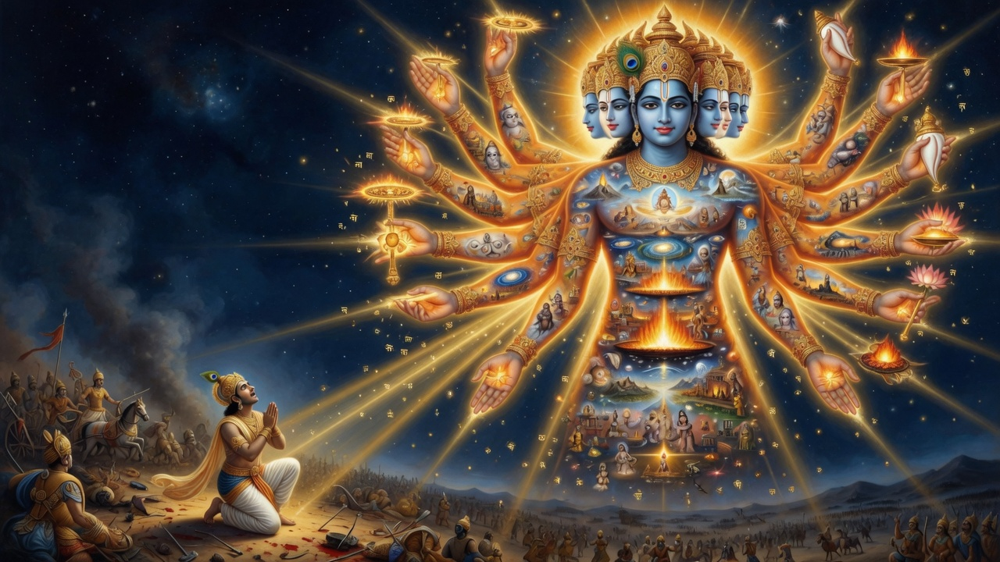

The complete chapter-wise song — clear teachings, sense-renderings of landmark verses, and conclusions you can understand.
భగవద్గీత — అధ్యాయాల వారీగా
భగవద్గీత — భగవంతుని పాట

Kurukshetra: the dialogue before the arrows fly.
The Bhagavad Gita (Sanskrit: Bhagavad-gītā, "Song of the Lord") is a Hindu scripture of 18 chapters and, in the standard recension fixed in Adi Shankara's tradition, 700 verses (shlokas). It stands inside the Mahabharata's Bhishma Parva as a dialogue between the Pandava prince Arjuna and his charioteer Krishna on the field of Kurukshetra, just as war is about to begin.
Each shloka is typically a couplet, so the poem is about 1,400 lines of Sanskrit verse, mostly in the anushthubh meter, with tristubh at dramatic peaks. The original chapters have no titles in the epic itself; later tradition names each chapter a yoga (discipline/path), such as Karma Yoga or Bhakti Yoga.
Historical layer: many scholars date composition broadly to the last centuries BCE (often ca. 2nd–1st century BCE is discussed), with the Mahabharata itself layered over time. Traditional layer: attributed to Vyasa. Both layers are real conversations about the text; they are not the same claim.
Seven hundred verses are not a pamphlet. A full word-for-word translation of all 700 can run to a substantial book (often 200–400+ pages with commentary). This CosmicTrotter journey does not replace a complete translation. It does what a storybook can do honestly: walk chapter by chapter, give the clear meaning of the teaching arc, offer sense-renderings of landmark verses (shared traditional sense, not one sect's private reading), and close each chapter with a conclusion you can understand and use.
We cross-check structure and teaching against the standard 700-verse count, the chapter yoga names used in living tradition, and scholarly overviews of the Gita as a synthesis of dharma, sankhya-yoga knowledge, and bhakti. Where editions differ (for example, chapter 13 sometimes listed as 34 or 35 verses), we note it.
Jump with the chips above. Use Reading mode and My places bookmarks. Each chapter below has: the story of what happens or is taught; bullet points of what the verses establish; key verse sense-renderings; and a short living conclusion. Sanskrit terms are explained once, then used naturally.
అర్జున విషాద యోగం · Arjuna Vishada Yoga
Chapter 1 — the bow will not rise.
The Gita opens not with a lecture, but with a field. Sanjaya describes the armies at Kurukshetra to the blind king Dhritarashtra. Conches sound. Then Arjuna asks Krishna to drive the chariot between the two forces so he can see who stands eager for war.
What he sees is not a map of victory. He sees grandfathers, teachers, uncles, brothers, sons, and friends — on both sides. His body rebels: limbs weaken, mouth dries, skin burns; the bow Gandiva slips. He says he sees no good in killing kin for a kingdom. Better to live on alms than sit on a throne bought with the blood of elders. He sits down, weapon laid aside, overwhelmed by sorrow (vishada).
Traditional teaching treats this chapter as a yoga in its own right: the honest facing of moral collapse. Without Arjuna's despair, the teaching has no patient. The song begins where many lives begin — when duty and love collide and the old scripts no longer work.
Traditional layer: Mahabharata Bhishma Parva dialogue. Sense-renderings below paraphrase the traditional meaning shared across major commentarial streams (not a single modern copyrighted translation).
Honest despair is not the enemy of wisdom; it is often the door. Name the conflict before you demand a solution.
సాంఖ్య యోగం · Sankhya Yoga

Chapter 2 — teaching begins.
Krishna answers with firmness and care. He names Arjuna's dejection as unworthy of his standing, then opens the first great teaching: the embodied Self is not destroyed when the body dies. Weapons do not cut it; fire does not burn it. As a person discards worn clothes for new ones, the Self moves through bodies.
From this ground rise the Gita's most practical lines: evenness of mind (samatva) is yoga; you have a right to action, not to the fruits of action; do not let results be your motive, and do not cling to inaction. The chapter ends with the portrait of one of steady wisdom (sthita-prajna) — content in the Self, not dragged by desire and anger.
Traditional layer: Mahabharata Bhishma Parva dialogue. Sense-renderings below paraphrase the traditional meaning shared across major commentarial streams (not a single modern copyrighted translation).
Care deeply about right action. Hold outcomes more lightly. That is the seed of freedom inside work.
కర్మ యోగం · Karma Yoga
Arjuna asks: if knowledge is superior, why push me into terrible action? Krishna replies that no one remains without action even for a moment — nature (prakriti) drives all beings. The path is not lazy withdrawal from work, but renunciation of selfish clinging while still acting.
He teaches sacrifice (yajna) as the spirit of offering: the world is bound by action except action done as sacrifice. The wise act for the holding-together of the world (loka-sangraha). Desire and anger born of rajas are the inner enemy. Master the self by the self.
Traditional layer: Mahabharata Bhishma Parva dialogue. Sense-renderings below paraphrase the traditional meaning shared across major commentarial streams (not a single modern copyrighted translation).
Do the work that is yours. Offer it. Do not use spiritual talk as an excuse for irresponsibility.
జ్ఞాన కర్మ సన్యాసం · Jnana Karma Sanyasa Yoga
Krishna places this yoga in an ancient lineage and declares his divine births: whenever dharma declines and adharma rises, he manifests age after age to protect the good, restrain the wicked, and establish dharma. One who truly knows this divine birth and action is not reborn into bondage in the same way, but comes to him.
The chapter unites knowledge and action: the wise see action in inaction and inaction in action. Many kinds of sacrifice exist — material, austerity, study, knowledge. Knowledge-sacrifice is supreme. The fire of knowledge burns the binding power of karma. Cut doubt with knowledge and stand in yoga.
Traditional layer: Mahabharata Bhishma Parva dialogue. Sense-renderings below paraphrase the traditional meaning shared across major commentarial streams (not a single modern copyrighted translation).
Knowledge without action dries up; action without knowledge becomes restless. Burn selfishness in clear seeing.
కర్మ సన్యాస యోగం · Karma Sanyasa Yoga
Arjuna asks which is better: renouncing actions or the yoga of action. Krishna says both can lead to the highest, but karma-yoga is often better — pure renunciation without yoga is hard. The true renouncer neither hates nor desires; free from dualities, that one is easily released from bondage.
The sage of equal vision sees the same reality in a learned brahmin, a cow, an elephant, a dog, and one outside conventional purity ranks. Happiness that depends only on sense contact is a womb of pain. Peace comes to the one who knows the Lord as enjoyer of sacrifices, master of worlds, and friend of all beings.
Traditional layer: Mahabharata Bhishma Parva dialogue. Sense-renderings below paraphrase the traditional meaning shared across major commentarial streams (not a single modern copyrighted translation).
Outer renunciation without inner freedom is incomplete. Inner freedom can still wear ordinary work.
ధ్యాన యోగం · Dhyana Yoga
Krishna teaches the discipline of meditation: moderation in food, sleep, and recreation; a clean seat; the mind and senses restrained; attention gathered to one point. The yogi sees the Self in all beings and all beings in the Self, and sees Krishna everywhere.
Arjuna objects that the mind is restless, strong, and hard to hold — like the wind. Krishna agrees, then gives the method: practice (abhyasa) and dispassion (vairagya). If a seeker falls from yoga, the effort is not lost; rebirth can favor continuing the path. Among yogis, the one who worships Krishna with faith, the inner Self abiding in him, is highest.
Traditional layer: Mahabharata Bhishma Parva dialogue. Sense-renderings below paraphrase the traditional meaning shared across major commentarial streams (not a single modern copyrighted translation).
Train the mind in honest daily practice. Falling is not failure if you rise and continue.
జ్ఞాన విజ్ఞాన యోగం · Jnana Vijnana Yoga
Krishna speaks of knowing him in full — not only as facts about the divine, but as lived realization. He describes a lower nature (material elements and mind) and a higher nature (the life-principle that upholds the world). He is the taste in water, the light in moon and sun, the sacred syllable Om, the seed of all beings.
Among thousands, few strive for perfection; among those who strive, few know him in truth. Four kinds of people turn to him: the distressed, the seekers of knowledge, the seekers of wealth, and the wise. Of these the wise who are ever united are dearest. Deluded people do not take refuge in him; those who do take refuge cross beyond delusion.
Traditional layer: Mahabharata Bhishma Parva dialogue. Sense-renderings below paraphrase the traditional meaning shared across major commentarial streams (not a single modern copyrighted translation).
Information about God is not the same as refuge. Realization matures through both clarity and devotion.
అక్షర బ్రహ్మ యోగం · Akshara Brahma Yoga
Arjuna asks about Brahman, the adhyatma, karma, the adhibhuta, the adhidaiva, and how the Divine is known at the time of death. Krishna defines these terms and teaches that whoever remembers him at the end, leaving the body, goes to his being. Therefore remember him at all times and fight — mind and intellect fixed on him.
He describes paths of return and non-return, the day and night of Brahma, and the imperishable goal. From the unmanifest all beings come forth at the coming of day; at night they dissolve. Beyond the unmanifest is the eternal unmanifest — the supreme goal. Those who reach him are not reborn into suffering in the same cycle of delusion.
Traditional layer: Mahabharata Bhishma Parva dialogue. Sense-renderings below paraphrase the traditional meaning shared across major commentarial streams (not a single modern copyrighted translation).
What you practice daily becomes what you can remember in extremity. Train the mind before the crisis.
రాజవిద్యా రాజగుహ్యం · Raja Vidya Raja Guhya Yoga
Krishna calls this the royal knowledge and royal secret — purifying, directly experienceable, easy to practice, imperishable. The whole universe is pervaded by him in his unmanifest form; beings rest in him, yet he is not exhausted by them. He is the father, mother, sustainer, and grandfather of the universe; the sacred syllable; the goal, supporter, lord, witness, abode, refuge, and friend.
He accepts even a leaf, flower, fruit, or water offered with devotion. Whatever you do, eat, offer, give, or tapas you perform — do it as an offering to him. Those who take refuge in him, even if of births or lives considered low by society, go to the highest goal. Fix the mind on him, be devoted, worship, bow — thus united, you will come to him.
Traditional layer: Mahabharata Bhishma Parva dialogue. Sense-renderings below paraphrase the traditional meaning shared across major commentarial streams (not a single modern copyrighted translation).
Royalty here is not wealth; it is a secret available in a leaf offered with love.
విభూతి యోగం · Vibhuti Yoga
Krishna describes his glories so that Arjuna may know him more fully. He is the source of gods and great sages; from his mind the four kinds of beings come forth. Intelligence, knowledge, non-delusion, patience, truth, self-restraint, calmness, joy and sorrow, birth and death, fear and fearlessness — these states of being arise from him.
Arjuna asks for detailed vibhutis. Krishna lists: among the Adityas he is Vishnu; among lights, the radiant sun; among words, the syllable Om; among immovable things, Himalaya; among warriors, Rama; among rivers, Ganga; among purifiers, the wind — and so on. Finally: what is the need of all this detail? With a single fragment of himself he supports this whole universe.
Traditional layer: Mahabharata Bhishma Parva dialogue. Sense-renderings below paraphrase the traditional meaning shared across major commentarial streams (not a single modern copyrighted translation).
When you meet excellence — courage, beauty, truth — let it point beyond itself to the source.
విశ్వరూప సందర్శనం · Vishwarupa Darshana Yoga

Chapter 11 — the cosmic form.
Arjuna asks to see the Lord's divine form. Krishna grants a divine eye. Sanjaya describes what Arjuna sees: countless mouths and eyes, infinite ornaments, faces on all sides, blazing like a thousand suns risen at once. Gods enter the form; the armies of both sides rush into the terrible mouths like rivers into the sea or moths into flame.
Arjuna trembles with awe and fear. He sees Time as the world-destroyer grown full, engaged in dissolving the worlds. Krishna tells him that the warriors are already slain in the cosmic vision; Arjuna is to be the instrument. Arjuna praises, then asks to see again the gentle two-armed form. Krishna returns to the familiar friend-form. He says this vision is hard to obtain; devotion is the way to know and enter into him in truth.
Traditional layer: Mahabharata Bhishma Parva dialogue. Sense-renderings below paraphrase the traditional meaning shared across major commentarial streams (not a single modern copyrighted translation).
Awe without friendship can crush; friendship without awe can shrink the Divine. The Gita holds both forms.
భక్తి యోగం · Bhakti Yoga
Arjuna asks who is better: those who worship the imperishable unmanifest, or those who worship Krishna with devotion. Krishna says those who fix the mind on him, ever united, endowed with supreme faith, are the most skilled in yoga. The path of the unmanifest is harder for embodied beings. For those who cannot fix the mind fully, he gives a ladder: practice, then dedicate actions, then renounce the fruit of action — which brings peace.
He lists the beloved devotee: no hatred for any being, friendly and compassionate, free from I-making and mine-making, equal in pain and pleasure, patient, content, self-controlled, firm in resolve, mind and intellect offered to him. The same list continues: one who neither disturbs the world nor is disturbed by it, free from joy, anger, fear, and anxiety — dear to him.
Traditional layer: Mahabharata Bhishma Parva dialogue. Sense-renderings below paraphrase the traditional meaning shared across major commentarial streams (not a single modern copyrighted translation).
Devotion is not soft escape; it is a trained heart — kind, steady, and offered.
క్షేత్ర క్షేత్రజ్ఞ విభాగం · Kshetra Kshetrajna Vibhaga Yoga
This chapter distinguishes the field (kshetra) from the knower of the field (kshetrajna). The field is the body and the psychophysical complex — elements, ego, intellect, senses, desire, aversion, pleasure, pain, the aggregate, consciousness, firmness. The knower in each body is the Lord as kshetrajna; he is also the knower of all fields.
Knowledge is described as humility, non-harm, patience, uprightness, service of the teacher, purity, steadfastness, self-control, detachment from sense objects, absence of egoism, seeing the defects of birth, death, age, and disease, non-attachment to family possessiveness, steady devotion, resort to solitude, constancy in self-knowledge. The object of knowledge is the beginningless supreme Brahman. Spirit and matter, purusha and prakriti, and their interplay are explained. One who sees the same Lord standing equally in all beings does not harm the Self by the self and goes to the highest goal.
Traditional layer: Mahabharata Bhishma Parva dialogue. Sense-renderings below paraphrase the traditional meaning shared across major commentarial streams (not a single modern copyrighted translation).
You are not only the field of thoughts and cells; you are also the knowing light. Do not hate the Self in another.
గుణత్రయ విభాగం · Gunatraya Vibhaga Yoga
Krishna analyzes the three gunas of prakriti: sattva (clarity, binding through attachment to knowledge and joy), rajas (passion, binding through attachment to action), and tamas (darkness, binding through negligence, laziness, and sleep). Sattva causes attachment to happiness; rajas to action; tamas, veiling knowledge, causes attachment to negligence.
When a person dies in predominance of a guna, the destination and next life-tendency differ. The fruit of sattvic action is purity; of rajas, pain; of tamas, ignorance. One who sees no doer other than the gunas, and knows what is higher than the gunas, comes to the divine being. The chapter ends with the marks of one who has transcended the gunas — equal in pleasure and pain, the same toward a clod, a stone, and gold — and with the statement that Krishna is the foundation of Brahman, of immortal freedom, of everlasting dharma, and of absolute bliss.
Traditional layer: Mahabharata Bhishma Parva dialogue. Sense-renderings below paraphrase the traditional meaning shared across major commentarial streams (not a single modern copyrighted translation).
Watch which quality is driving you today — clarity, restlessness, or fog — and choose practices that free rather than feed the binding.
పురుషోత్తమ యోగం · Purushottama Yoga
Krishna uses the image of the ashvattha tree with roots above and branches below — a cosmic tree of samsara to be cut with the axe of non-attachment, so one may seek the goal from which one does not return. The eternal portion of the Lord becomes the living soul in the world of the living, drawing the senses and mind which rest in prakriti.
He describes two persons in the world: the perishable and the imperishable. Beyond both is the supreme Person (Purushottama), who enters the three worlds and sustains them as the unchanging Lord. Whoever knows him as Purushottama knows all and worships him with the whole being. This most secret teaching is given; knowing it, one becomes wise and has done what has to be done.
Traditional layer: Mahabharata Bhishma Parva dialogue. Sense-renderings below paraphrase the traditional meaning shared across major commentarial streams (not a single modern copyrighted translation).
You are more than the restless tree of becoming. Seek the root that does not die with the leaves.
దైవాసుర సంపద్విభాగం · Daivasura Sampad Vibhaga Yoga
Krishna contrasts two estates of character. Divine qualities include fearlessness, purity of heart, steadfastness in knowledge-yoga, charity, self-control, sacrifice, study, austerity, non-harm, truth, absence of anger, renunciation, peace, non-slander, compassion for beings, non-covetousness, gentleness, modesty, absence of fickleness, vigor, forgiveness, fortitude, purity, freedom from hatred, and absence of pride.
Demonic qualities include hypocrisy, arrogance, conceit, anger, harshness, and ignorance. Demonic people say the world is without truth, without basis, without God, born of desire alone. Clinging to insatiable desire, full of hypocrisy and pride, they grasp wrong means for wealth and declare themselves the enjoyers and lords. Krishna says threefold is the gate of hell destructive of the self: desire, anger, and greed. Therefore let these three be abandoned. Let scripture be your guide in determining what to do and what not to do.
Traditional layer: Mahabharata Bhishma Parva dialogue. Sense-renderings below paraphrase the traditional meaning shared across major commentarial streams (not a single modern copyrighted translation).
Watch the triple gate. Character is destiny rehearsed daily in small choices.
శ్రద్ధాత్రయ విభాగం · Shraddhatraya Vibhaga Yoga
Arjuna asks about those who sacrifice with faith but outside scriptural rule. Krishna teaches that faith itself is threefold according to nature: sattvic, rajasic, tamasic. A person is what their shraddha is. Sattvic people worship gods; rajasic, yakshas and rakshasas; tamasic, the dead and hosts of spirits — according to traditional classification of faith-objects in this chapter.
Food, sacrifice, austerity, and gift are each analyzed by the three gunas. Sattvic food is strengthening, purifying, agreeable; rajasic is too bitter, sour, salty, excessively hot; tamasic is stale, tasteless, putrid, leftover. Austerity of body, speech, and mind is described. Om Tat Sat is explained as the threefold designation of Brahman used in sacrifice, gift, and austerity. An offering or gift or austerity done without faith is asat — it is nothing here or hereafter.
Traditional layer: Mahabharata Bhishma Parva dialogue. Sense-renderings below paraphrase the traditional meaning shared across major commentarial streams (not a single modern copyrighted translation).
Faith is not empty belief; it is the quality of heart you feed with every meal, gift, and word.
మోక్ష సన్యాస యోగం · Moksha Sanyasa Yoga
The longest chapter gathers the teaching. Arjuna asks the difference between sannyasa and tyaga. Krishna explains renunciation of desire-driven actions and abandonment of the fruit of all action. Not all action can be abandoned by the embodied; what is abandoned is clinging. Five factors of action are listed. Knowledge, the known, and the knower are threefold by gunas; so are intellect, firmness, and happiness.
Duties of brahmins, kshatriyas, vaishyas, and shudras are described according to nature-born qualities — a classical social map of the text's time, which later readers interpret in diverse ethical ways; the Gita's own pressure is toward svadharma and liberation rather than cruelty. Better one's own dharma imperfectly than another's well done. One who is free from ego, whose intellect is untainted, even if killing these people, does not kill — in the text's battlefield logic of non-doership.
Krishna gives a supreme word: fix mind on him, be his devotee, sacrifice to him, bow to him; you will come to him. Abandon all dharmas and take refuge in him alone; he will free you from all sins; do not grieve. Arjuna says his delusion is destroyed; memory is regained; he will do Krishna's word. Sanjaya closes: where Krishna, Lord of yoga, and Arjuna the archer are, there are fortune, victory, well-being, and sound policy.
Traditional layer: Mahabharata Bhishma Parva dialogue. Sense-renderings below paraphrase the traditional meaning shared across major commentarial streams (not a single modern copyrighted translation).
The song ends not with theory alone, but with a free choice: 'I will do your word.' Refuge and responsibility meet.
నేటి జీవితంలో గీత
People sometimes reduce the Gita to a single line about fruits of action, or to a call to war, or to pure devotion alone. The eighteen chapters refuse that thinning. Knowledge of the Self, skill in action, meditation, the gunas, the cosmic form, and refuge in the Person are woven together. Classical commentators (Shankara, Ramanuja, Madhva, and many others) disagree on metaphysics while sharing the text; that diversity is part of the Gita's real history.
Name the field. Where do duties collide for you — family and truth, work and rest, loyalty and justice? Write the collision without slogans, as Arjuna named his kin.
Separate action from fever. Choose one necessary task. Do it with full skill. Practice releasing the fantasy of total control over results (2.47–48).
Keep a friend on the chariot. The Gita is dialogue. Wisdom often arrives in conversation with a teacher, a trusted companion, or a living commentary tradition — not only in private thunder.
Related CosmicTrotter paths: the short Vishwaroopa card; philosophy journeys on free will, meaning, and self. Use Ask Krishna for personal application — but let the chapters above remain your map.
The war in the epic continues after the song. What changes is the one who stands in it. Arjuna's last word in the dialogue is not a theory — it is consent: the delusion is gone; he will do the word. That is where a storybook must leave you: informed, steadier, and free to choose.